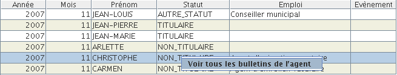

Etat de paye
L'état de paye regroupe les bulletins de paye et la répartition par nature.
Le bulletin de paye est l'élément principal de cet état. C'est le bulletin de paye que l'utilisateur peut visualiser. On peut accéder à un bulletin de paye par une recherche sur bulletin, ou par une recherche sur lignes de bulletins.
On accède aux recherche sur Bulletins de paye par le menu Recherche / Etat de paye / Bulletins de paye
Ces recherches renvoient toujours une liste de bulletins de paye.
Les critères de recherche possibles sont :
Permet de filtrer sur une année et un mois. XéMéLios ne propose dans les listes Année et Mois que des Années et des Mois pour lesquels il y a des valeurs
Permet de filtrer les bulletins pour lesquels il y a l'évènement séléctionné. XéMéLios affiche les évènements déclarés dans la nomenclature du fichier
Permet de filter les bulletins pour lesquel il y a au moins un évènement.
Permet de filtrer les bulletins pour lesquels le montant net est égal, inférieur ou supérieur à un montant donné.
Permet de filtrer les bulletins pour lesquels le montant brut est égal, inférieur ou supérieur à un montant donné.
Permet de filtrer les bulletins pour lesquels le montant imposable est égal, inférieur ou supérieur à un montant donné. Ce champ peut être optionnellement affiché en résultat de recherche.
Permet de filtrer les bulletins pour lesquels le nombre d'heures supplémentaires est égal, inférieur ou supérieur à une valeur donnée. Ce champ peut être optionnellement affiché en résultat de recherche.
Permet de filtrer les bulletins pour lesquels le nombre d'heures travaillées est égal, inférieur ou supérieur à une valeur donnée. Ce champ peut être optionnellement affiché en résultat de recherche.
Permet de filtrer les bulletins pour lesquels le temps de travail est égal, inférieur ou supérieur à une valeur donnée. Ce champ peut être optionnellement affiché en résultat de recherche.
Permet de filtrer les bulletins pour lesquels l'indice de l'Agent est égal, inférieur ou supérieur à une valeur donnée.
Permet de filtrer les bulletins dont le NBI est égal, supérieur ou inférieur à une valeur donnée. Ce champ peut être affiché optionnellement en résultat de recherche.
Permet de filtrer les bulletins dont l'emploi de l'agent vaut une certaine valeur. Un assistant affiche la liste des valeurs disponibles pour l'emploi.
Permet de filtrer les bulletins dont l'agent est rattaché au service spécifié. Un assistant affiche la liste des valeurs disponibles pour le service.
Permet de filtrer les bulletins sur des informations des lignes. XéMéLios n'affichera que les bulletins ayant au moins une ligne de la catégorie de rubrique précisée, et pour laquelle le montant sera égal, inférieur ou supérieur à celui spécifié.
Permet de filtrer les bulletins sur des informations des lignes. XéMéLios n'affichera que les bulletins ayant au moins une ligne dont la rubrique détaillée est celle spécifiée et dont le montant est égal, inférieur ou supérieur à celui spécifié.
Permet de filtrer les bulletins sur des informations des lignes. XéMéLios n'affichera que les bulletins ayant au moins une ligne portant sur la caisse de cotisation spécifiée.
Permet de filtrer les bulletins par nom d'agent
Permet de filtrer les bulletins par prénom d'agent
Permet de filtrer les bulletins par matricule d'agent
Permet de filtrer les bulletins par NIR d'agent. Ce champ peut être optionnellement affiché en résultat de recherche.
Permet de filtrer les bulletins dont le statut de l'agent est celui spécifié.
Permet de filtrer les bulletins dont l'agent a le nombre spécifié d'enfants. Ce champ peut être affiché optionnellement en résultat de recherche.
Permet de filtrer les bulletins dont l'agent a le grade spécifié. Un assistant affiche l'ensemble des valeurs disponibles pour le grade. Ce champ peut être optionnellement affiché en résultat de recherche.
Permet de filtrer les bulletins dont l'agent a l'échelon spécifié. Un assistant affiche l'ensemble des valeurs disponibles pour le grade. Ce champ peut être optionnellement affiché en résultat de recherche.
Permet de filtrer les bulletins sur des informations des lignes. XéMéLios n'affichera que les bulletins ayant au moins une ligne de traitement principal dont le montant correspond à la valeur spécifiée.
Permet de filtrer les bulletins sur des informations des lignes. XéMéLios n'affichera que les bulletins ayant au moins une ligne d'indemnité de résidence dont le montant correspond à la valeur spécifiée.
Permet de filtrer les bulletins sur des informations des lignes. XéMéLios n'affichera que les bulletins ayant au moins une ligne de supplément familial dont le montant correspond à la valeur spécifiée.
Permet de filtrer les bulletins sur des informations des lignes. XéMéLios n'affichera que les bulletins ayant au moins une ligne d'autres indemnités dont le montant correspond à la valeur spécifiée.
Permet de filtrer les bulletins sur des informations des lignes. XéMéLios n'affichera que les bulletins ayant au moins une ligne d'avantage en nature dont le montant correspond à la valeur spécifiée.
Permet de filtrer les bulletins sur des informations des lignes. XéMéLios n'affichera que les bulletins ayant au moins une ligne de déduction sur brut dont le montant correspond à la valeur spécifiée.
Permet de filtrer les bulletins sur des informations des lignes. XéMéLios n'affichera que les bulletins ayant au moins une ligne de rappel dont le montant correspond à la valeur spécifiée.
Permet de filtrer les bulletins sur des informations des lignes. XéMéLios n'affichera que les bulletins ayant au moins une ligne d'acompte dont le montant correspond à la valeur spécifiée.
Permet de filtrer les bulletins sur des informations des lignes. XéMéLios n'affichera que les bulletins ayant au moins une ligne de retenue sur net dont le montant correspond à la valeur spécifiée.
Permet de filtrer les bulletins sur des informations des lignes. XéMéLios n'affichera que les bulletins ayant au moins une ligne de cotisation patronale dont le montant correspond à la valeur spécifiée.
Permet de filtrer les bulletins portant au moins sur ce budget.
Permet de filtrer les bulletins dont la référence statutaire de l'agent correspond à la valeur spécifiée.
Permet de filtrer les bulletins dont le code de la référence statutaire de l'agent correspond à la valeur spécifiée.
Permet de filtrer les bulletins dont le libellé de la référence statutaire de l'agent correspond à la valeur spécifiée.
Permet de filtrer les bulletins dont le RIB de l'agent correspond à la valeur spécifiée.
Permet de filtrer les bulletins portant sur l'année spécifiée.
Permet de filtrer les bulletins portant sur le mois spécifié.
Permet de ne chercher que les bulletins avec au moins une Pièce justificative.
Permet de chercher les bulletins ayant une Pièce justificative dont l'ID unique correspond à la valeur saisie.
Permet de chercher les bulletins ayant une Pièce justificative dont le nom correspond à la valeur saisie.
Permet de chercher les bulletins rattachés à un établissement. Un assistant affiche l'ensemble des établissements disponibles pour la collectivité. Ce champ peut être optionnelement affiché en résultat de recherche.
Cette recherche permet de trouver les agents qui sont entrés entre la période 1 et la période 2. C'est à dire ceux n'ayant pas de bulletin de paye sur la période 1 mais en ayant un sur la période 2.
Cette recherche permet de trouver les agents qui sont sortis entre la période 1 et la période 2. C'est à dire ceux ayant un bulletin de paye sur la période 1 mais n'en ayant pas sur la période 2.
Cette recherche permet de trouver les agents étant entrés ou sortis entre la période 1 et la période 2. Le résultat de cette recherche est la combinaison du résultat des 2 précédentes recherches.
Cette recherche permet de trouver les bulletins des agents dont le revenu a varié plus qu'indiqué. Cette recherche peut porter sur les variation de montant brut ou de montant net. La variation peut être exprimée en pourcentage ou en montant.
Cette recherche permet de trouver les bulletins des agents dont l'indice a varié plus qu'indiqué entre les deux périodes. Cette variation peut être exprimée en pourcentage ou en points.
Cette recherche permet de trouver les bulletins des agents dont le RIB a changé entre les deux périodes.
Cette recherche permet de trouver les bulletins des agents ayant été imputés sur plusieurs budgets.
Ces quatres exports permettent d'exporter les informations des lignes de paye pour les consulter et les re-travailler dans Excel.
Cet export exporte toutes les lignes de paye d'une période.
Cet export exporte toutes les lignes de paye de la catégorie spécifiée et dont le montant correspond à la valeur spécifiée.
Cet export exporte les lignes de paye dont la rubrique correspond à la valeur spécifiée et dont le montant est égal, supérieur ou inférieur à la valeur spécifiée.
Cet export exporte les lignes se rapportant à la caisse spécifiée.
Depuis un résultat de recherche, en faisant un clic-droit sur une ligne, on peut accéder à tous les bulletins de l'agent :

On accède aux recherches sur lignes de bulletins de paye par le menu Recherche / Etat de paye / Lignes de paye
Ces recherches renvoient toujours des lignes de bulletin. Un double-clic sur une ligne de résultat affiche le bulletin correspondant à la ligne séléctionnée, avec la ligne sélectionnée mise en surbrillance.
Permet de filtrer sur une année et un mois. XéMéLios ne propose dans les listes Année et Mois que des Années et des Mois pour lesquels il y a des valeurs.
Permet de filtrer sur une catégorie de rubrique. XéMéLios ne renvoie que les lignes de la catégorie spécifiée et dont le montant est égal, supérieur ou inférieur au montant spécifié.
Ne renvoie que les lignes dont la rubrique détaillée est celle spécifiée et dont le montant correspond à celui spécifiée.
Ne renvoie que les lignes des bulletins dont le nom de l'agent correspond à celui spécifié.
Ne renvoie que les lignes des bulletins dont le prénom de l'agent correspond à celui spécifié.
Ne renvoie que les lignes des bulletins dont le matricule de l'agent correspond à celui spécifié.
Ne renvoie que les lignes des bulletins dont le nir de l'agent correspond à celui spécifié.
Ne renvoie que les lignes des bulletins dont le statut de l'agent est celui spécifié.
Ne renvoie que les lignes des bulletins dont la caisse de cotisation correspond à celle spécifiée.
Ne renvoie que les lignes de Traitement principal dont le montant correspond à celui spécifié.
Ne renvoie que les lignes d'indemnité de résidence dont le montant correspond à celui spécifié.
Ne renvoie que les lignes de Supplément Familial dont le montant correspond à celui spécifié.
Ne renvoie que les lignes d'autres indemnités dont le montant correspond à celui spécifié.
Ne renvoie que les lignes d'avantage en nature dont le montant correspond à celui spécifié.
Ne renvoie que les lignes de déduction sur brut dont le montant correspond à celui spécifié.
Ne renvoie que les lignes de rappel dont le montant correspond à celui spécifié.
Ne renvoie que les lignes d'acompte dont le montant correspond à celui spécifié.
Ne renvoie que les lignes de retenue sur net dont le montant correspond à celui spécifié.
Ne renvoie que les lignes de cotisations patronales dont le montant correspond à celui spécifié.
Depuis un résultat de recherche, en faisant un clic-droit sur une ligne, on peut accéder à tous les bulletins de l'agent :
On accède aux recherches sur répartition par nature par le menu Recherche / Etat de paye / Répartition par Nature
Ces recherches renvoient systématiquement des lignes de répartition par nature. Un double-clic sur une ligne de résultat n'affiche rien.
Permet de filtrer sur une année et un mois. XéMéLios ne propose dans les listes Année et Mois que des Années et des Mois pour lesquels il y a des valeurs.
Ne renvoie que les lignes de répartition dont la fonction correspond à la valeur choisie.
Ne renvoie que les lignes de répartition dont le budget correspond à la valeur spécifiée.
Ne renvoie que les lignes de répartition dont l'année correspond à la valeur spécifiée.
Ne renvoie que les lignes de répartition dont le mois correspond à la valeur spécifiée.
Les flux de paye peuvent être analysés. L'accès se fait comme pour le PES, par le menu Fichier / Analyser / Paye. L'analyse vérifie la conformité du fichier au schéma de paye 1.2a. Elle vérifie plusieurs règles métier sur les bulletins de paye, mais ne fait aucun contrôle sur la répartition par nature.